Memorial Center Novi Sad
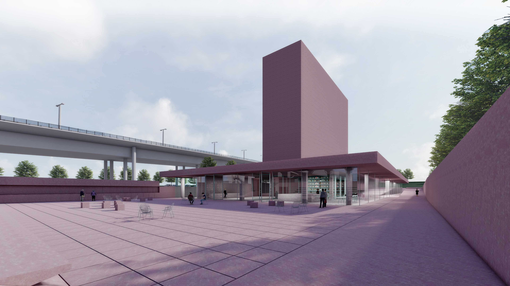
About the Project
Role: Architectural Designer
Company: NORMOTIC FZE
Project: Memorial Center Novi Sad
Competition: International Competition · 2023
International architectural competition project developed as a proposal for the design of the Memorial Center in Novi Sad.
Concept
The Memorial Centre is conceived as a new urban toponym and a distinctive landmark in the panorama of Novi Sad, contributing to the city's recognizable image of vertical structures emerging from greenery. Its modernist volumetric language is reinterpreted through forms that evoke both the industrial heritage of the city and the archetypal image of the house as a symbol of human presence.
The horizontal element of the composition, conceived as a roof and a water mirror, reflects fragments of the sky, introducing themes of freedom, infinity, transcendence, and eternity into the memorial landscape. Architecture, urban design, and landscape are conceived as a unified intervention, approaching the site as a form of land art rather than simply an isolated building.
A carefully choreographed sequence of paths, level changes, courtyards, and spatial thresholds gradually guides visitors from the surrounding urban environment into the memorial complex, preparing them for its narrative. The Memorial Courtyard acts as the symbolic starting point of this journey, bringing visitors together around spaces dedicated to remembrance, reflection, and ritual.
Inside the Centre, the movement continues through a precisely structured sequence of spaces, from everyday functions and the entrance hall to the Memorial Hall, which provides the emotional and symbolic context before visitors enter the exhibition and lecture spaces.
The wider urban intervention strengthens the connection between Liman Park, the Memorial Centre, and the Danube, while integrating the complex into the everyday life of the city.
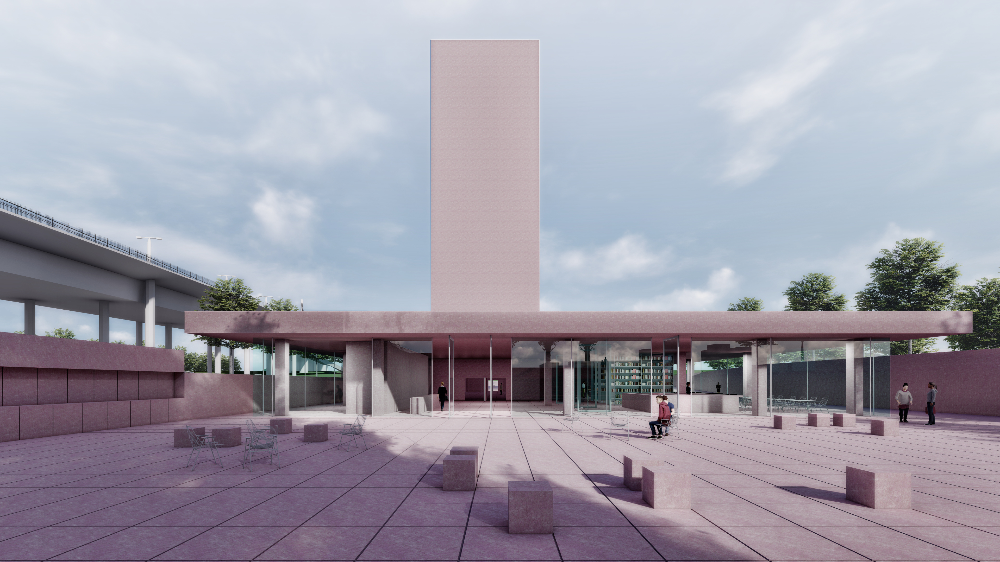
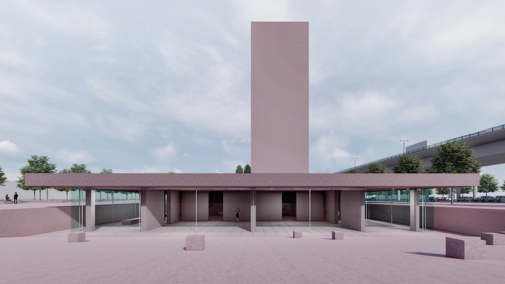
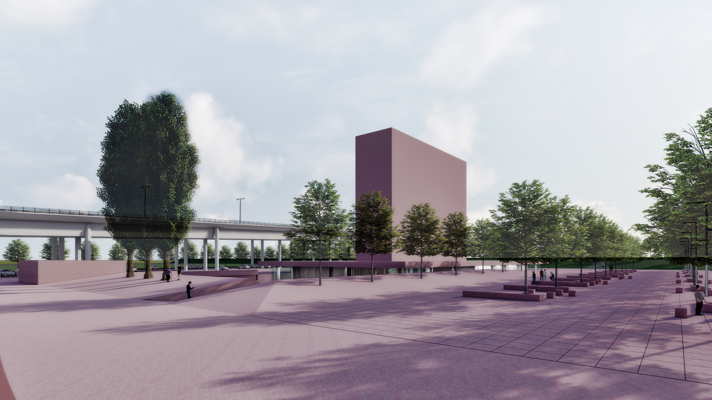
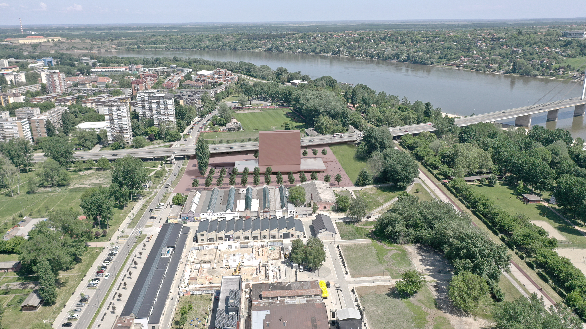
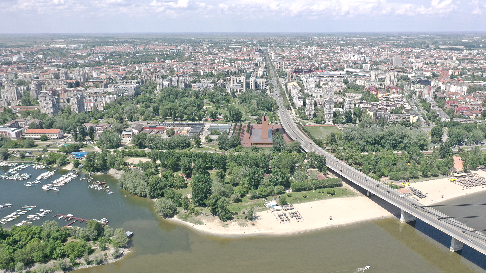
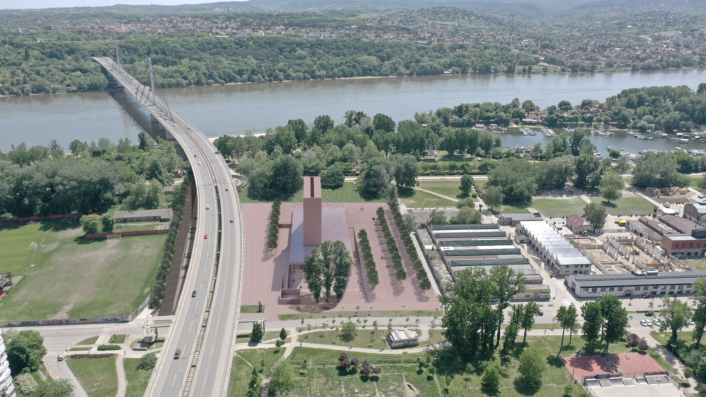
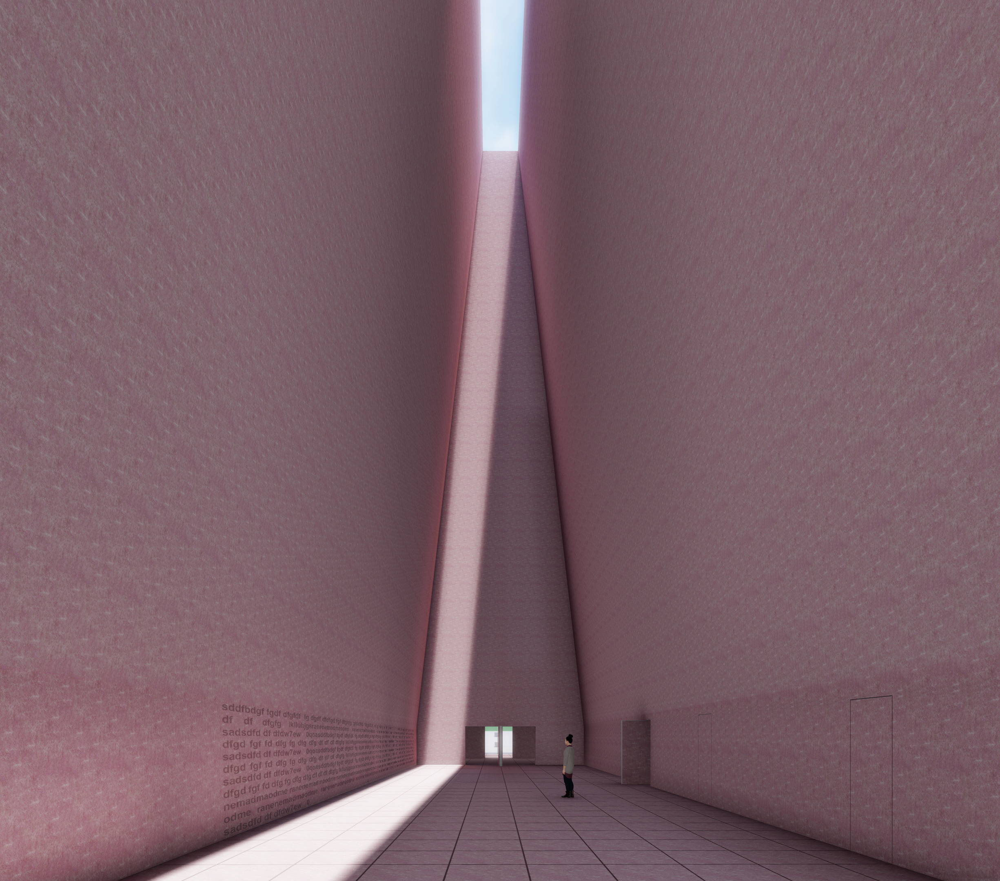
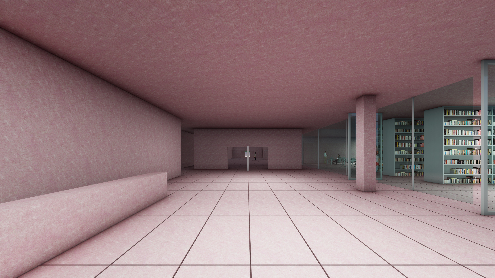
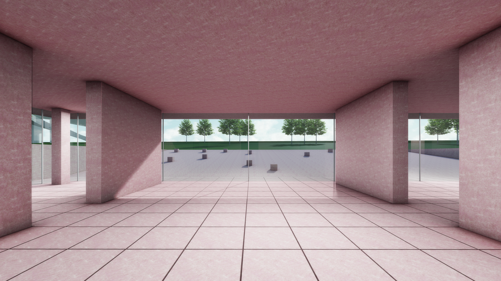
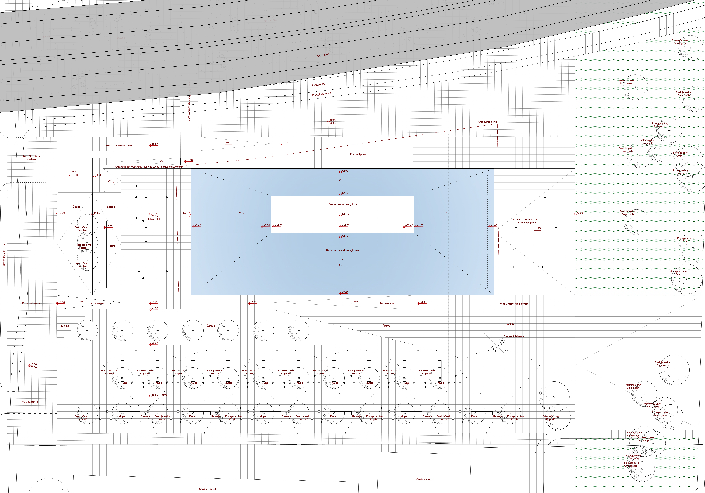
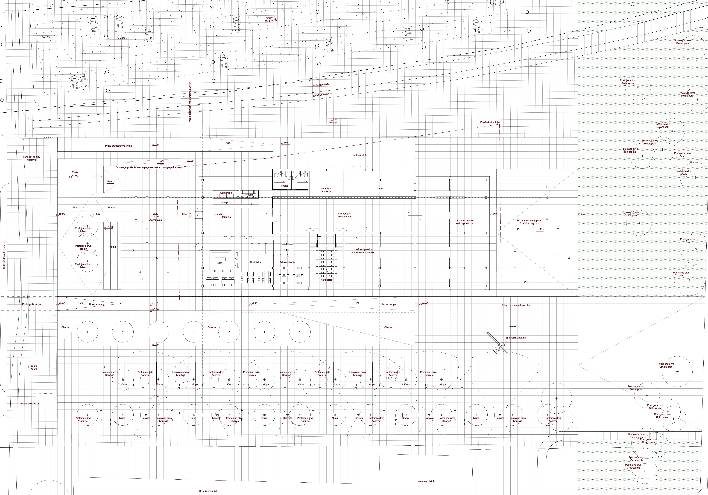
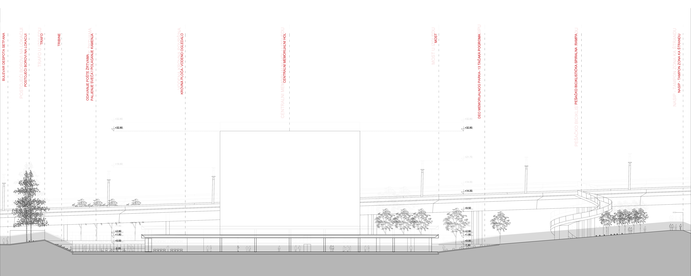
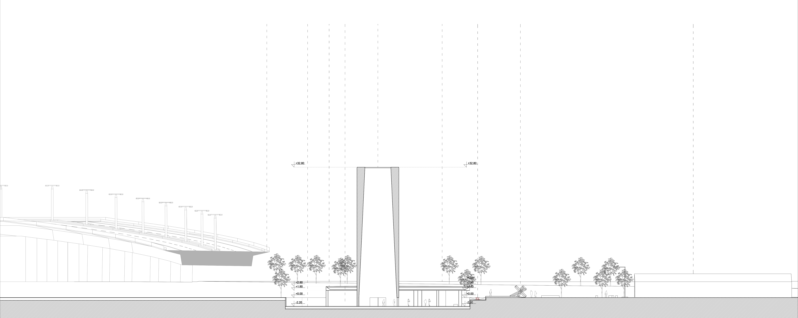